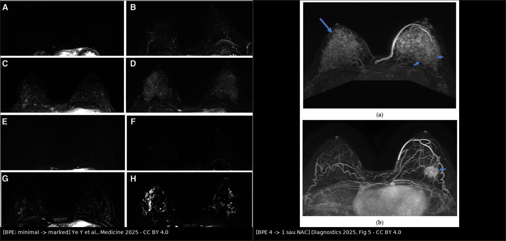
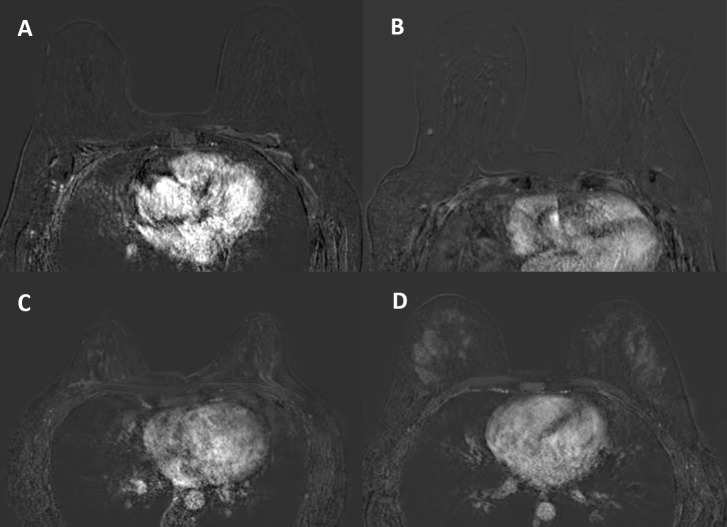
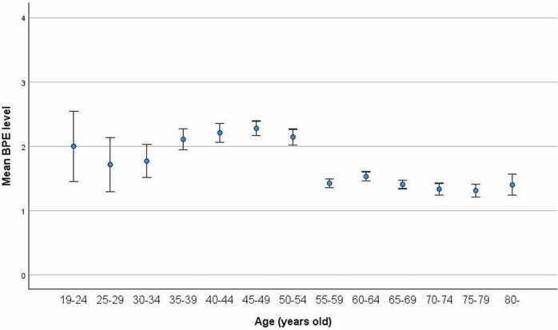

595 — Tăng ngấm mô tuyến nền trên MRI vú (BPE): phân độ, dao động theo hormone & cách giảm dương tính giả / Background parenchymal enhancement
Tags: pattern:tang-ngam-mo-tuyen-nen pattern:ngam-khong-khoi vung:vu score:BI-RADS-BPE score:FGT protocol:MRI-vu-DCE protocol:che-subtraction anatomy:mo-tuyen-vu
Mức chắc chắn (certainty): tổng hợp y văn (literature synthesis) — nhóm tự biên từ 5 bài mở toàn văn CC BY/CC BY-NC-SA (Ye Y et al., Medicine 2025, PMC12499845; Cîrlig IA et al., Curr Health Sci J 2025, PMC12831547; Okuma H et al., Eur J Radiol Open 2024, PMC11615933; Kim MY et al., Diagnostics 2025, PMC12651529; Li XT et al., Front Oncol 2025, PMC12582933). Số liệu là của từng cohort, không gộp thành "chuẩn chung".
1. Tổng quan — BPE là gì, vì sao nó đổi theo hormone
- Định nghĩa: BPE là mức ngấm thuốc cản quang của mô tuyến vú BÌNH THƯỜNG sau tiêm gadolinium — tức là chức năng của mô tuyến (tưới máu + tính thấm mao mạch), không phải khối lượng mô tuyến. ACR BI-RADS 5th edition (2013) bắt buộc báo cáo BPE trên mọi MRI vú có cản quang.
- TẠI SAO trông như vậy (vật lý + sinh lý):
- Gadolinium làm ngắn T1 của mô chứa thuốc → trên chuỗi T1W sau tiêm có xóa mỡ, mô tuyến sáng lên. Vì BPE nằm trong mô tuyến, nó cùng hình dạng và cùng phân bố với mô tuyến — khác u (u có bờ, khối choán chỗ).
- Estrogen/progesterone gây giãn mạch + tăng tính thấm ở mô tuyến → mô tuyến ngấm nhiều hơn khi nội tiết cao (tiền mãn kinh, chu kỳ, HRT, thai–cho con bú) và ngấm ít khi nội tiết thấp (hậu mãn kinh, dùng tamoxifen/AI).
- Thời điểm đọc quyết định: BPE được đọc trên ảnh trừ (subtraction) của thì sau tiêm ĐẦU TIÊN — đây là lúc nền tuyến ngấm mạnh nhất và cũng là lúc dễ nhầm với ngấm không khối (NME) nhất. Đọc thì muộn hơn thì nền bớt sáng nhưng u cũng có thể đã thoát thuốc.
- Ngưỡng định lượng (bắt buộc — BI-RADS 4 mức + cách lượng hóa):
- Minimal — < 25% mô tuyến ngấm (gần như chỉ thấy mỡ).
- Mild — 25–50%.
- Moderate — 50–75%.
- Marked — > 75% mô tuyến ngấm (định nghĩa dùng trong PMC12499845).
- Phân bố thực tế (để biết "bao nhiêu là thường"): cohort 353 phụ nữ (PMC12831547): minimal 49,3%, mild 18,1%, moderate 22,7%, marked 9,9%. Tức ~1/3 phụ nữ có BPE moderate–marked — đây là lý do BPE là nguồn dương tính giả lớn, không phải ngoại lệ.
- BPE đổi theo tuổi/mãn kinh (số cụ thể):
- Tuổi trung vị giảm dần khi BPE tăng: 53,5 tuổi (minimal) → 47,5 (mild) → 41 (moderate) → 37 (marked), p < 0,001.
- Toàn bộ 35 ca marked đều tiền mãn kinh; 88,8% ca moderate là tiền mãn kinh; 77% ca hậu mãn kinh là minimal (PMC12831547).
- Đỉnh không nằm ở "trẻ nhất" mà ở QUANH MÃN KINH: BPE cao hơn ở nhóm peri-menopause so với cả trước và sau mãn kinh (562 bệnh nhân, PMC11615933) → giảm theo tuổi là KHÔNG tuyến tính. Đây là điểm hay bị dạy sai ("càng trẻ càng sáng").
- Độ đồng thuận giữa 2 bác sĩ: ICC 0,840 cho BPE và 0,864 cho FGT (gần hoàn hảo) — nhưng chỉ khi đọc đúng thì và đúng ảnh trừ.
- BPE là dấu hiệu chức năng có giá trị tiên lượng (không chỉ là "nhiễu"):
- Trong 216 phụ nữ (72 ung thư), 55,6% ca ung thư có BPE moderate/marked; OR 3,3–5,0 cho ung thư khi BPE moderate/marked so với minimal/mild; mật độ ACR c/d có OR 4,7–5,8 (PMC12499845).
- Sau hóa trị tân bổ trợ (NAC): BPE giảm ở mọi thể phân tử, mạnh nhất ở TNBC và HER2+. Ví dụ ER+: 26/16/28/30% → 68/28/4/0%; TNBC: 47,6/14,3/23,8/14,3% → 76,2/14,3/9,5/0% (116 bệnh nhân, PMC12651529).
- Ở TNBC (76 bệnh nhân), BPE vú đối bên sau NAC vào mô hình Cox đa biến cho DFS với HR 6,57 (minimal/mild = 1); nhóm BPE giảm từ cao → thấp tái phát ít hơn nhóm thấp → cao (p = 0,022) (PMC12582933).
- Phản biện (fidelity + critique): các cohort trên khác thiết kế (hồi cứu, đơn trung tâm, cỡ 76–562), khác cách đọc (2 reader consensus hay 1 reader), và chưa có ngưỡng BPE định lượng được chuẩn hóa. Vì vậy: dùng BPE để mô tả + cảnh báo + tiên lượng, KHÔNG dùng để chẩn đoán một mình; và đừng trích "OR 5,0" như thể BPE là xét nghiệm sàng lọc.
2. Mẫu hình (pattern) + chẩn đoán phân biệt theo hình thái & bối cảnh (Gamut)
- Khuôn 1 — Nền ngấm ĐỐI XỨNG, lan tỏa, theo đúng phân bố tuyến. Gamut: BPE sinh lý (hormone) vs viêm tuyến lan tỏa vs phù sau xạ hai bên (hiếm). Chốt: đối xứng + không có bờ + không choán chỗ + giảm ở thì muộn → BPE.
- Khuôn 2 — Nền ngấm mạnh + tuyến to, đau, có sữa. Gamut: thai/cho con bú (lactational change) vs viêm tuyến (mastitis) vs BPE do HRT. Chốt: có thai/đang cho bú + đối xứng + không sốt → sinh lý; sốt, đỏ, một bên → viêm (bài 512).
- Khuôn 3 — Nền ngấm cao + một vùng ngấm "đậm hơn" cùng bên. Gamut: BPE không đều (regional) vs NME của DCIS vs tăng sinh lành tính (ADH). Chốt: cùng hình thái tuyến, không bờ, giảm dần → BPE; bờ mờ, có "khe" giữa các ống tuyến, đậm lên hoặc plateau → NME thật.
- Khuôn 4 — Hậu mãn kinh > 5 năm mà BPE VẪN marked. Gamut: HRT/phytoestrogen vs béo phì (aromatase ngoại vi) vs tổn thương ngấm thật vs hiếm: u tiết hormone. Chốt: hỏi thuốc/hormone trước, rồi mới kết luận.
- Khuôn 5 — BPE sụp về minimal sau khi bắt đầu tamoxifen/AI. Gamut: tác dụng thuốc (bình thường) vs giảm ngấm do mãn kinh/xạ vs đáp ứng u. Chốt: nền phẳng hai bên + có thuốc → do thuốc; giảm một ổ → đáp ứng u (bài 515).
- Khuôn 6 — BPE tăng ở vú đối bên trong lúc điều trị NAC. Gamut: thay đổi nội tiết do ngừng/đổi thuốc, suy buồng trứng do hóa trị vs tăng sinh thật. Chốt: đối xứng, không khối, theo dõi → không sinh thiết.
- Gợi nhớ "B-P-E = Background, Pattern, Endocrine": Background (nền) — Pattern (đối xứng/lan tỏa hay khu trú) — Endocrine (nội tiết: tuổi, chu kỳ, HRT, tamoxifen).
3. Bảng so sánh phân biệt (ma trận đối chiếu)
| Thực thể (entity) | Hình ảnh điển hình (MRI DCE thì đầu, ảnh trừ) | Chốt vào (rule-in) | Chốt loại (rule-out) | Gợi ý xác nhận |
|---|---|---|---|---|
| BPE sinh lý | Ngấm đối xứng hai bên, lan tỏa, cùng hình dạng mô tuyến, không bờ, giảm ở thì muộn | Đối xứng + không choán chỗ + giảm dần thì muộn | Một vùng đậm hơn có bờ/khe → không phải BPE đơn thuần | Đọc ảnh trừ + so thì muộn; so hai bên |
| NME của DCIS | Ngấm không khối, bờ mờ, phân bố đoạn/tuyến tính, thường một vùng, có thể có vi vôi trên nhũ ảnh | Phân bố đoạn (ductal) + đậm lên/plateau + một bên | Đối xứng, lan tỏa, giảm dần → BPE | Sinh thiết định vị MRI; đối chiếu nhũ ảnh |
| Viêm tuyến (mastitis) | Da dày, phù mô đệm, ngấm lan tỏa một bên, đau | Sốt + đỏ + một bên + da dày | Đối xứng, không sốt → không viêm | Lâm sàng + kháng sinh; siêu âm loại áp-xe |
| Thay đổi do cho con bú | Tuyến to, ngấm mạnh hai bên, nang sữa, mạch máu nổi | Đang cho bú + đối xứng | Một ổ có bờ trong nền sáng → khối thật | Siêu âm; trì hoãn MRI không cấp |
| Thay đổi sau sinh thiết/xạ | Ngấm khu trú đúng đường kim/trường xạ, có hematoma, giảm theo thời gian | Đúng vị trí can thiệp + có sẹo/hematoma | Ngấm ngoài vùng can thiệp → tổn thương mới | So phim cũ; MRI ≥ 6 tháng sau xạ nếu không cấp |
| Fibroadenoma / tăng sinh lành tính | Khối bờ rõ, ngấm đồng nhất hoặc vách, T2 sáng | Bờ rõ + không xâm lấn + T2 sáng | Bờ mờ, xâm lấn mô đệm → nghi ác | Siêu âm; theo dõi/BI-RADS 3 |
| BPE do HRT / béo phì | Nền moderate–marked hai bên, hậu mãn kinh, không khối | Đang HRT/béo phì + đối xứng + không khối | Có ổ ngấm khu trú → không quy cho HRT | Ngừng HRT (nếu được) rồi chụp lại — chưa có ngưỡng thời gian chuẩn, ghi "chưa rõ" |

*Trái: 4 mức BPE trên ảnh MIP trừ (A–D: minimal → marked) và trên ảnh trừ có mask (E–H) — cùng một bệnh nhân, cùng một thì; cách dựng ảnh quyết định "độ sáng" bạn thấy. Phải: (a) trước NAC, BPE độ 4 (marked), mũi tên dài chỉ u; (b) sau NAC, BPE độ 1, u còn lại (mũi tên ngắn) → nền giảm mạnh dù u chưa mất. Ảnh ghép letterbox, CC BY 4.0 (Ye Y et al., Medicine 2025, Fig 2, PMC12499845; Kim MY et al., Diagnostics 2025, Fig 5, PMC12651529).*
Cùng 4 mức trên ảnh trừ thì sau tiêm đầu tiên, ảnh axial: (A) minimal, (B) mild, (C) moderate, (D) marked. Đối chiếu với ảnh ghép ở trên: nền càng sáng thì càng dễ bỏ sót NME — không phải "nền sáng = bệnh". Nguồn: Cîrlig IA et al., Curr Health Sci J 2025, Fig 1, CC BY-NC-SA 4.0 (giữ nguyên bản).4. Protocol chụp, cách đọc & xử lý khi nền quá sáng
- Protocol tối thiểu để đọc được BPE:
- 1,5 T hoặc 3 T, coil vú chuyên dụng, nằm sấp.
- DCE T1W có xóa mỡ, gadolinium 0,1 mmol/kg, tốc độ 2 mL/s, thì đầu sau tiêm ~60–120 giây, bề dày 1–2 mm; bắt buộc ảnh trừ (subtraction) và MIP trừ.
- Trước tiêm: T1W không xóa mỡ (phân độ FGT), T2W xóa mỡ (nang/phù), DWI/ADC khi cần.
- Đọc BPE trên ảnh trừ thì sau tiêm ĐẦU TIÊN, đánh giá cả tỷ lệ (%) mô tuyến ngấm và cường độ, chọn mức cao nhất trong hai bên (BI-RADS: lấy mức cao hơn).
- Thời điểm chụp — điểm đang thay đổi trong thực hành:
- ACR Practice Parameter (2018, sửa 2023) không yêu cầu hẹn theo pha chu kỳ (được trích trong PMC12831547).
- Nhiều trung tâm vẫn hẹn ngày 7–14 của chu kỳ (khi BPE thấp nhất) cho MRI tầm soát/chẩn đoán ở người tiền mãn kinh — hợp lý về mặt sinh lý, nhưng không còn là yêu cầu bắt buộc; nếu đã chụp đúng pha thì ghi lại pha vì nó ảnh hưởng so sánh lần sau.
- Cách phân biệt BPE với tổn thương — 4 bước:
- So ảnh trước tiêm và ảnh trừ: BPE trừ hết phần mô tuyến nền; tổn thương thật còn lại sau khi trừ.
- So thì muộn: BPE giảm dần; NME/DCIS thường plateau hoặc tăng.
- So hai bên: BPE đối xứng; tổn thương bất đối xứng (trừ BPE vùng — regional, dễ nhầm nhất).
- Hình thái: BPE không có bờ, ôm theo mô tuyến; NME có bờ mờ, khe giữa các ống tuyến, phân bố đoạn.
- Khi nền quá sáng (moderate–marked) — các bước giảm dương tính giả:
- Dựng ảnh trừ + MIP trừ ở nhiều thì (không chỉ 1 ảnh).
- Đọc trên màn hình có cửa sổ (window/level) thay đổi được và so với MRI lần trước nếu có.
- Siêu âm second-look nhắm đúng vùng nghi ngờ — nếu siêu âm thấy tổn thương tương ứng thì sinh thiết bằng siêu âm, không cần sinh thiết định vị MRI.
- Nếu vẫn không phân định được BPE vùng với NME: chụp lại sau 4–8 tuần ở pha chu kỳ khác (nếu tiền mãn kinh) hoặc sinh thiết định vị MRI khi có yếu tố nguy cơ/bất đối xứng rõ.
- Không dùng "BPE cao" làm lý do hoãn đánh giá một ổ ngấm khu trú thật.
- BPE trên CEM (nhũ ảnh cản quang): CEM cũng có BPE và cũng phân độ 4 mức, nhưng là ảnh 2D chồng lớp → tương quan với mật độ bị thổi phồng so với MRI (3D thật). Vì vậy BPE trên CEM không thay thế BPE trên MRI khi ra quyết định.
flowchart TD
A[MRI vú có cản quang: đọc BPE trên ảnh trừ thì đầu] --> B{BPE mức nào?}
B -->|Minimal hoặc Mild| C[Đọc tổn thương bình thường - nền không che lấp]
B -->|Moderate hoặc Marked| D{Có ổ ngấm khu trú bất đối xứng?}
D -->|Không - nền đối xứng lan tỏa| E[BPE sinh lý: ghi mức + yếu tố nội tiết]
E --> F{Hậu mãn kinh > 5 năm mà BPE vẫn marked?}
F -->|Có| G[Hỏi HRT/phytoestrogen, BMI, thuốc - chụp lại nếu ngừng được]
F -->|Không| H[Theo dõi theo lịch; so sánh lần sau cùng pha chu kỳ]
D -->|Có| I[So thì muộn + so hai bên + so ảnh trước tiêm]
I --> J{Giảm dần và cùng hình thái tuyến?}
J -->|Có| E
J -->|Không| K[Siêu âm second-look nhắm vùng nghi ngờ]
K --> L{Siêu âm thấy tổn thương tương ứng?}
L -->|Có| M[Sinh thiết bằng siêu âm]
L -->|Không| N{Còn nghi NME?}
N -->|Có nguy cơ cao hoặc bất đối xứng rõ| O[Sinh thiết định vị MRI]
N -->|Không chắc| P[Chụp lại 4-8 tuần ở pha chu kỳ khác]

Đường BPE trung bình theo nhóm tuổi 5 năm (562 bệnh nhân): cao ở tiền mãn kinh, đỉnh ở quanh mãn kinh, rồi giảm đều sau mãn kinh → quan hệ với tuổi là phi tuyến. Đây là lý do phải hỏi trạng thái mãn kinh, không chỉ hỏi tuổi. Nguồn: Okuma H et al., Eur J Radiol Open 2024, Fig 1, CC BY 4.0.5. Biến thể bình thường và cạm bẫy
- Cạm bẫy 1 — lẫn BPE với FGT (mật độ): FGT là lượng mô tuyến (cấu trúc, đọc trên T1 trước tiêm); BPE là mức ngấm (chức năng, đọc trên ảnh trừ). Vú đặc nhưng BPE thấp và vú ít đặc nhưng BPE cao đều tồn tại — nhiều nghiên cứu không tìm thấy tương quan chặt giữa hai thứ (ρ chỉ 0,271 trong PMC11615933). Đừng suy BPE từ mật độ.
- Cạm bẫy 2 — "nền sáng thì không thấy gì = bình thường": BPE marked che lấp NME; phải đọc nhiều thì + ảnh trừ + thì muộn, và không kết luận âm tính nếu nền che vùng có triệu chứng.
- Cạm bẫy 3 — BPE vùng (regional) giả NME: BPE không đều theo vùng là biến thể bình thường; chỉ khác biệt bờ/khe/đậm lên thì muộn mới là NME. Đây là dương tính giả hay gặp nhất trên MRI tầm soát.
- Cạm bẫy 4 — "càng trẻ càng sáng": sai một nửa — đỉnh ở quanh mãn kinh (PMC11615933). Ở phụ nữ 45–55 tuổi, BPE có thể cao hơn cả người 30 tuổi.
- Cạm bẫy 5 — hậu mãn kinh mà BPE cao: luôn hỏi HRT, phytoestrogen, thuốc nam, béo phì; nếu không giải thích được và có ổ khu trú → đừng quy cho "nội tiết".
- Cạm bẫy 6 — dùng BPE để đánh giá đáp ứng: BPE giảm sau NAC ở đa số, nhưng giảm BPE ≠ u chết hoàn toàn (ảnh (b) trong composite vẫn còn u). Đánh giá đáp ứng phải dựa trên kích thước + đặc điểm u + ADC, không dựa vào BPE.
- Cạm bẫy 7 — BPE tăng sau NAC ở một số ca: trong loạt 4 ca của PMC12582933 có ca BPE tăng — nên không dùng quy tắc "sau NAC là BPE luôn giảm"; và thay đổi BPE hai chiều mới là thứ mang thông tin tiên lượng (HR 6,57 chỉ trong một cohort TNBC nhỏ — chưa đủ để thành chỉ định).
- Cạm bẫy 8 — so sánh 2 lần chụp khác pha/khác máy: BPE phụ thuộc pha chu kỳ, liều thuốc, thì chụp, cách dựng ảnh trừ. So BPE giữa hai lần mà khác protocol là so sai — ghi lại pha và thông số.
- Cạm bẫy 9 — thuốc làm BPE sụp: tamoxifen khiến toàn bộ 25/25 người dùng trong một cohort ở mức minimal (PMC12831547); nền phẳng làm tổn thương ngấm yếu dễ bị bỏ qua vì mất "tương phản nền". Đọc kỹ trên ảnh trừ, không dựa vào MIP.
6. Tự lượng giá — Blind Quiz
Ca 1 — Nữ 43 tuổi, tiền mãn kinh, MRI tầm soát vì mẹ bị ung thư vú. Không triệu chứng. Đọc ảnh trừ thì đầu.
- Hỏi: ảnh nào là mức nào? Có cần sinh thiết vì "nền ngấm nhiều" không? Yếu tố nào phải hỏi trước khi kết luận?
Bấm để hiện đáp án (findings + chẩn đoán)
- Findings: (A) minimal, (B) mild, (C) moderate, (D) marked — ngấm đối xứng hai bên, lan tỏa, cùng hình dạng mô tuyến, không bờ, không choán chỗ.
- Chẩn đoán: BPE sinh lý (không phải tổn thương). Không sinh thiết chỉ vì BPE cao.
- Phải hỏi: pha chu kỳ (ngày 7–14 thường thấp nhất), HRT/thuốc nội tiết, đang cho con bú, và so với lần chụp trước. Ghi mức BPE vào báo cáo (BI-RADS yêu cầu).
- Nguồn ảnh: Cîrlig IA et al., Curr Health Sci J 2025, Fig 1, CC BY-NC-SA 4.0 (giữ nguyên bản).
Ca 2 — Nữ 32 tuổi, TNBC vú trái, đang sau 6 đợt NAC. So MRI trước và sau điều trị.
- Hỏi: BPE thay đổi thế nào? Có được kết luận "đáp ứng hoàn toàn" vì nền đã phẳng không?
Bấm để hiện đáp án (findings + chẩn đoán)
- Findings: (a) BPE độ 4 (marked), u ngấm mạnh (mũi tên dài); (b) BPE độ 1 (minimal), u vẫn còn (mũi tên ngắn) → nền giảm nhưng u chưa mất.
- Chẩn đoán: BPE giảm sau NAC (phù hợp sinh lý: suy buồng trứng do hóa trị + giảm tưới máu tuyến). Không kết luận đáp ứng hoàn toàn chỉ vì nền phẳng — phải đo kích thước u + đặc điểm bờ + ADC.
- Con số để nhớ: trong 116 bệnh nhân, BPE giảm ở mọi thể, mạnh nhất ở TNBC/HER2+ (PMC12651529); nhưng đây là dấu hiệu chức năng, không phải tiêu chuẩn đáp ứng.
- Nguồn ảnh: Ye Y et al., Medicine 2025, Fig 2, CC BY 4.0 + Kim MY et al., Diagnostics 2025, Fig 5, CC BY 4.0 (ảnh ghép letterbox).
Ca 3 — Nữ 58 tuổi, mãn kinh 6 năm, MRI vì mật độ C. BPE marked hai bên, không ổ khu trú. Bác sĩ muốn kết luận "bình thường".
- Hỏi: BPE marked ở người mãn kinh 6 năm có "bình thường" không? Hỏi gì, làm gì tiếp?
Bấm để hiện đáp án (findings + chẩn đoán)
- Findings: BPE marked, đối xứng, lan tỏa, không ổ ngấm khu trú → không phải tổn thương.
- Nhưng: sau mãn kinh BPE thường minimal (77% ca hậu mãn kinh là minimal trong PMC12831547) → BPE marked là bất thường về sinh lý, phải giải thích: HRT/phytoestrogen, béo phì (aromatase ngoại vi), thuốc nội tiết, hoặc hiếm hơn là nguyên nhân buồng trứng.
- Xử trí: hỏi thuốc + BMI; nếu ngừng được HRT thì chụp lại (chưa có ngưỡng thời gian chuẩn — ghi "chưa rõ"); vẫn tiếp tục tầm soát theo mật độ C (siêu âm bổ sung/DBT theo bài 524), và nhớ BPE cao là yếu tố nguy cơ độc lập (OR 3,3–5,0 trong PMC12499845) — không phải "chỉ là nhiễu".
- Bài học: BPE là dấu hiệu chức năng có ý nghĩa — vừa gây dương tính giả, vừa mang thông tin nguy cơ; đừng bỏ qua cả hai mặt.
Bài liên quan chéo
- 500 – Tổng quan Hệ Vú & Sản Phụ khoa
- 510 – Vú: BI-RADS nhũ ảnh – siêu âm – MRI
- 524 – Sàng lọc & quản lý nguy cơ cao ung thư vú
- 594 – Hóa dự phòng ung thư vú nguy cơ cao (tamoxifen/AI làm BPE sụp về minimal)
- 515 – Đáp ứng vú sau hóa trị tân bổ trợ
- 516 – Hình ảnh vú sau điều trị
- 522 – Theo dõi sau điều trị ung thư vú
Ảnh
images/composite_bpe-phan-do.jpg(ghép từ 2 ảnh CC BY 4.0),images/595_BPE_MRI_PMC12499845.jpg,images/595_BPE-giam-sau-NAC_MRI_PMC12651529.jpg,images/595_BPE-4muc_MRI_PMC12831547.jpg(CC BY-NC-SA — giữ nguyên bản),images/595_BPE-theo-tuoi_PMC11615933.jpg(CC BY 4.0),images/595_BPE-sau-NAC_MRI_PMC12582933.jpg(CC BY 4.0). Nguồn + giấy phép từng ảnh trongimages/CREDITS.md.
Không dùng để chẩn đoán độc lập khi chưa có người hướng dẫn.